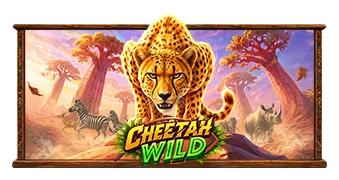

Cheetah Wild (Pragmatic Play): tragamonedas safari con Collect, comodines x27 y premio máximo 5,000x
Publicado el 10 de octubre de 2026. Pragmatic Play lanzó Cheetah Wild el 8 de octubre: una tragamonedas safari de volatilidad baja en cuadrícula 5x4 con 1,024 formas de ganar, donde los comodines de los carretes centrales traen multiplicadores x2 o x3 y el símbolo Collect con forma de pata dorada recoge valores de dinero de hasta 100x.

Arte oficial del juego: Pragmatic Play.
Datos clave
| Proveedor | Pragmatic Play |
|---|---|
| Fecha de lanzamiento | 8 de octubre de 2026 |
| Diseño | Cuadrícula 5x4, 1,024 formas de ganar, pagos de izquierda a derecha |
| RTP | 96,50% (también existen versiones de 95,51% y 94,51%) |
| Volatilidad | Baja |
| Premio máximo | 5,000x la apuesta |
| Apuestas | 0,20 - 240 € |
| Mecánica principal | Comodines con multiplicador (x2/x3, se combinan hasta x27); Collect de pata dorada; giros gratis con 5 niveles de mejora |
Cómo se juega
Elefantes, rinocerontes, cebras y gacelas encabezan la tabla de pagos en 1,024 formas de ganar. Los comodines caen en los carretes 2, 3 y 4 con multiplicadores de x2 o x3, y cuando más de un comodín participa en el mismo premio sus valores se multiplican entre sí, así que una cadena completa puede llegar a x27 antes de aplicarse. Los símbolos de dinero valen de 0,25x a 100x y caen en los carretes 2 a 5, mientras el símbolo Collect con forma de pata dorada aparece en el carrete 1 y, cuando se conecta por una vía adyacente de izquierda a derecha, paga la suma de todos los valores de dinero, aumentada por los multiplicadores de comodín que estén en la cadena.
Tres, cuatro o cinco símbolos de dispersión otorgan 8, 15 o 20 giros gratis, y de dos a cinco símbolos de dispersión más durante la ronda suman otros 5 a 20 giros. Durante la función, los símbolos Level Up alimentan un medidor: al juntar 4, 7, 13 y 15 se desbloquean cinco niveles progresivos, y cada nivel convierte otro símbolo animal en símbolos de dinero por el resto de la ronda. Si llegas al nivel cinco, cada animal de pago alto cae como símbolo de dinero hasta que termina la función. Donde la regulación lo permite también se puede comprar la entrada directa: 100x por giros gratis normales, 500x por giros súper gratis, más opción de apuesta ante.
Dónde jugar
Los títulos de Pragmatic Play están en los lobbies de los mejores casinos cripto de México y Colombia - la disponibilidad cambia por región, así que revisa el lobby en tu país antes de depositar.